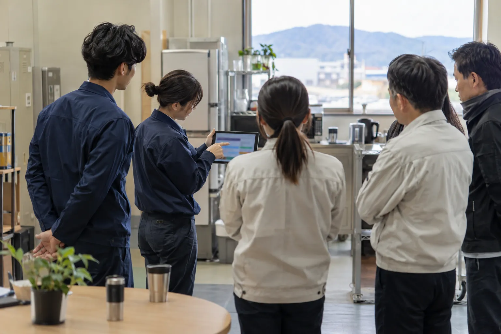

03 ／ PARTNER
AXのみぎ腕
現場のAI化を、隣で一緒に進める。
AXは、AIを使って仕事の進め方そのものを変えることです。月額で会社に入り、業務の棚卸しから仕組みづくり、定着までを一緒に進めます。
みぎ腕を相談する道具を入れて、終わりにしない。
現場の人が自分たちで回せるようになるまで、伴走します。
こんな会社に
- CASE 01研修でAIは覚えたが、現場の仕事は変わっていない
- CASE 02AIを任せられる担当者が、社内にいない
- CASE 03一部の作業ではなく、業務の流れごと見直したい
見つけて、作って、根づかせる
01
業務を棚卸しするFind
どの仕事に、どれだけ時間がかかっているか。現場で話を聞き、AIに任せられる仕事を見つけます。
02
任せる仕組みをつくるBuild
手順書、社内向けのAI、業務アプリ。必要なものを作り、AIが間違えたときに人が気づける確認の手順も一緒に組み込みます。

03
現場に根づかせるSettle
使い方の共有、社内ルール、担当者の育成。人が入れ替わっても続くように、仕組みを会社に残します。
関わり方
1.現場に行く
月に数回、会社に伺い、現場の方と一緒に手を動かします。
2.定例で決める
オンラインの定例で、進み具合と次に任せる仕事を決めます。
3.いつでも聞ける
日々の「これAIでできる？」には、チャットで答えます。
4.形を残す
毎月、やったことと次の一手を記録にまとめてお渡しします。
まず1つの業務から、3か月だけ試す始め方もできます。
事例・活用例

AIで現場が変わる例
弊社で測った数字と、自治体や企業が公式に発表している数字です。
- 弊社（実演）
見本の請求書30枚の転記をAIに任せた見本の請求書PDFを読み取り、ファイル名の付け直しと表への転記までをAIに任せました。
約5分30枚の読み取り〜転記（手作業なら約2時間の想定）｜弊社のデモ - 静岡県湖西市
プログラミング未経験の職員が、生成AIでコードを作り、水道の確認作業を自動化したエラー時の再送信を自動化し、職員が手で確かめる作業をなくしました。
約66時間年間の削減｜出典：総務省 生成AI導入事例集（2024） - 大成建設（建設）
発注の公告文と仕様書から、施工計画書の原稿をAIで作るシステムを開発した同社は、原稿を約10分で作れるとしています。
約85%作業時間の削減見込み｜出典：同社発表（2025） - コプロス（山口県下関市・建設）
新入社員の研修に、生成AIを取り入れた研修にかかる手間を、AIで減らしました。
25%研修工数の削減｜出典：同社発表（2026）
Price
月額は、都度お見積もり
訪問の回数、関わる部署の数、目指す範囲を伺ってから、月々の金額をお出しします。
ご相談から開始まで
STEP 1
フォームから相談
やりたいことや困っている作業を、そのまま書いてください。
STEP 2
お話を伺い、お見積もり
内容と期限を伺い、進め方と金額をご提案します。
STEP 3
開始
ご納得いただけたら始めます。途中で内容を変えたいときも、ご相談ください。
ほかのサービス


Contact
どの仕事から変えるか、
一緒に決めましょう。
相談はフォームから受け付けています。内容を読んで、こちらからご連絡します。